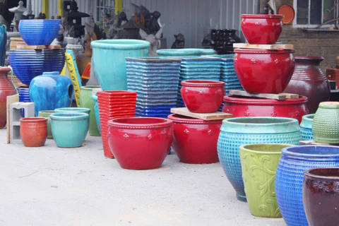
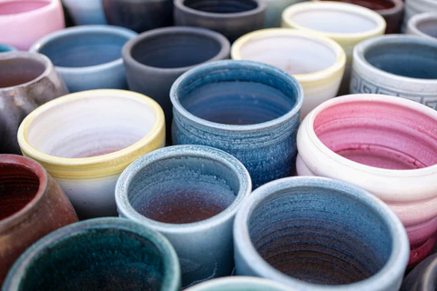
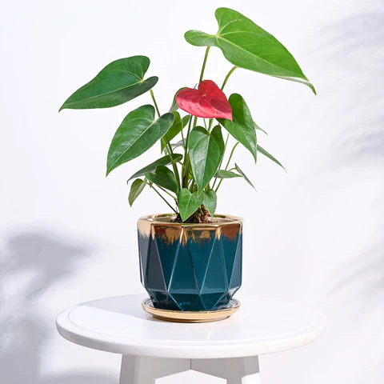
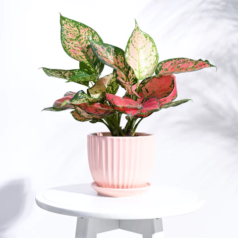
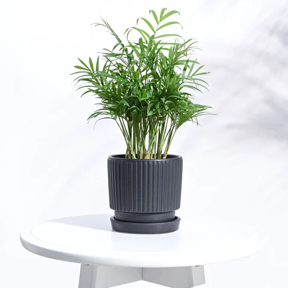

Elevating Your Home Decor with Ceramic Pots and Planters
March 16, 2024
Table of Contents
Don't you think ceramic pots are such absolute lookers? With
aesthetic colors and wonderful patterns, they're basically the
perfect blend of functionality and beauty, and what better way to
decorate your home than with something as wonderful as ceramic
outdoor or indoor planters!
Of course, with the number of plant decor options in the market
going through the roof, you might feel confused about what choice
suits you best. So, if you're looking at this blog as a sign and a
pitch in favor of ceramic planters, here's why we think you'd
absolutely love them!
• Why Are Ceramic Pots and Planters So Lovable?
Ceramic pots are like those bubbly, cheery, and bright work colleagues or friends that you can't help but adore. Here are a few reasons why we think you'd fall instantly in love them:
1. Our Ceramic Pots Last... For Quite a While
We make it a point to build things that last. Whether its
connections with our nature or our pots and planters that allow you
to bring this very nature indoors. So, we craft our ceramic planters
will materials that are built to last - through rough and continuous
usage. These pots will provide your plants with solid and sturdy
homes, giving them room to grow and thrive.
Investing in stable homes...always a good idea, no?
2. They Give Your Plants A Lot of Breathing Space
Our plants are our biggest priority and every thing we do, we do it for them...and you! So, our small and large ceramic pots for plants give them enhanced breathability and moisture retention. Since ceramic is a material that retains water, it makes for perfectly moist and cool homes for your precious green babies.
3. Are They Eco-Friendly? But of course!
Eco-friendliness isn't something we take lightly! So, our outdoor and indoor ceramic planters are crafted with materials that make them eco-friendly - from start to end. Even the sourcing of their materials is done responsibly, thus ensuring that you get the best of the best, sustainably.
4. Aesthetics = Unmatched
Ceramic and porcelain happens to be a very versatile raw material, meaning we can mold it into the shape, size, and color we wish to create. This allows us to play around with all kinds of aesthetics and bring you something that both, you and your plants, will truly adore.
• Ceramic House Plant Pots: Versatile Home Decor Has Never Looked Better!
There is no doubt that ceramic pots and planters make for durable
and reliable plant decor items. But what makes them so versatile?
As we said, the versatility of ceramic makes it a wonderful raw
material to play around with. It allows us to delve deeper into
several different aesthetics, thereby letting us match your various
vibes and tastes. So, whether you're looking for something
minimalistic and elegant or your taste is more whimsical and quirky,
we've got you covered.
1. Our Ceramic Pots Last... For Quite a While
Additionally, whether you choose small or large ceramic pots for
plants, there is no limitation to how you can use them! Their
resilient and hardy nature allows them to thrive through harsh
weathers and rough usage. This means that you can make use of them
indoors and outdoors without having to worry about their safety and
lifespan.
Honestly, versatile, functional, and stunning? We're sold!
So, what kinds of ceramic pots and planters do we bring you to give
you a wider variety and a more expansive palette in plant decor?
• Types of Ceramic Pots to Choose From: There's Something For Everyone
Minimalism been drawing you in lately? No worries, we've got the perfect fix! Or maybe whimsy is what you're going for? Well, here are a few options that will satisfy your plant decor cravings perfectly:
1. Aurelius Ceramic Pots

Classy, modern, and elegant - the Aurelius ceramic planters are
absolutely stunning with their minimalistic design and sleek
finishes. The golden rims and finishings around their edges give
them a beautiful look; adding to their versatile and mesmerizing
charm.
The luxurious looks of these planters make them versatile additions
to any spaces indoors or outdoors. As ceramic pots for indoor
plants, the Aurelius planters create a very unique look.
2. Grail Ceramic Planters

Of course, ceramic planters can be used as covers for the actual
plant pots, but planting indoor plants in ceramic pots is also a
possibility! If instead of putting our GroPot into the planter, you
want to put your plant directly into it, you can choose to do so,
and our Grail planters give you the perfect opportunity to do
whatever you please!
Crafted with the finest quality ceramic, these planters give you
ease of use and unparalleled beauty. Designed with a drainage hole,
this ceramic planter keeps your plant safe from overwatering.
Simplistic yet elegant aesthetics and a well-built structure, these
pots are the holy 'Grail' you're looking for.
3. Roma Ceramic Pots

If affordable beauty had a face, it would be these Roma pots! Like
we said, functionality + beauty = ceramic pots! Available in solid
statement colors like black, white, and grey, these pots give you
the choice of adding to your neutral and colorful interiors. Of
course, they become quick friends with all your plants and enhance
their natural beauty by tenfold.
It is inspired by the timeless beauty of the Roman Empire; paying
homage to its jaw-dropping architecture and everlasting aesthetics.